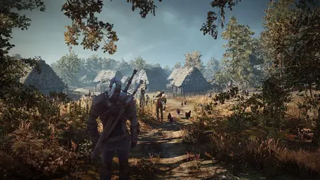

Novinky
Game Pass stojí ročně více než miliardu dollarů, prý je ale profitový a firmě se služba vyplácí
Phil Spencer nedávno promluvil o Game Passu a podělil se o pár zajímavých informací. Kupříkladu už máme potvrzeno, že se momentálně nepočítá se zavedením Game Passu na platformy Nintenda a PlayStationu.

Novinky
Bývalí vývojáři ze studia CD Projekt RED pracují na nové hře s temným fantasy prostředím
Významní vývojáři ze studia CD Projekt RED jako game director hry Zaklínač 3 Konrad Tomaszkiewicz nebo scénárista Jakub Szamałek začali pracovat na nové RPG hře zasazené v temném fantasy světě. Projekt by se měl jmenovat Dawnwalker a vývojáři s ním počítají v roce 2025.
Novinky
Fanouškovský remake The Elder Scrolls II: Dagerfalls je konečně venku
The Elder Scrolls II: Dagerfall je dodnes mnohými považován za nejlepší titul z této legendární série, a tak není divu, že se několik nejoddanějších fanoušků spojilo a přetvořili společně tento titul v Unity Enginu.
Recenze
Avatar: Frontiers of Pandora je dalším příkladem recyklování obsahu z předešlých projektů Ubisoftu
Avatar: Frontiers of Pandora je konečně tady, bohužel ne tak jak by si fanoušci Avatara pravděpodobně přáli. Hra by se dala jednoduše popsat jako přeskinovaný Far Cry Primal zasazený do Pandory.
Novinky
Druhý Hellblade se nám představil ve zcela nové ukázce a vypadá famózně
Hellblade od studia Ninja Theory se nám představil na Game Awards 2023 s novou gameplay ukázkou, která láká především na vizuál a soubojový systém. Hra by měla vyjít již příští rok.